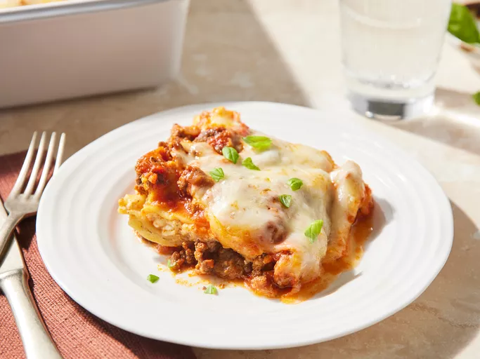

Dal Makhni
Go Back

Description
Ever go to an Indian restaurant and wonder how they make those lentils? I hated lentils before I discovered
Indian food. Then I scoured the internet to figure out how they achieved them, and through mixing and matching
recipes and methods on videos, I've arrived at this recipe, which I think is pretty close. This version is very
rich, but you can leave out the cream to make it lighter. Kasuri methi (fenugreek leaves) is almost impossible
to find in the U.S., even in NYC, but it gives this dish something very special.
Ingredients
- 1 cup lentils
- ¼ cup dry kidney beans (Optional)
- 5 cups water
- salt to taste
- 2 tablespoons vegetable oil
- 1 tablespoon cumin seeds
- 4 cardamom pods
- 1 cinnamon stick, broken
- 4 bay leaves
- 6 whole cloves
- 1 ½ tablespoons ginger paste
- ½ tablespoons garlic paste
- ½ teaspoon ground turmeric
- 1 pinch cayenne pepper, or more to taste
- 1 cup canned tomato puree, or more to taste
- 1 tablespoon chili powder
- 2 tablespoons ground coriander
- ¼ cup butter
- 2 tablespoons dried fenugreek leaves (Optional)
- ½ cup cream (Optional)
Instructions
- Cook and drain the ground beef, then stir in the spaghetti sauce and simmer.
- Combine the cottage cheese, 2 cups of mozzarella, eggs, half of the Parmesan, and seasonings.
- Assemble the lasagna according to the detailed recipe.
- Bake, covered, for 45 minutes.
- Uncover and continue baking for 10 minutes.
Go Back